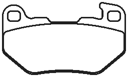

Specifications
General Specifications
Service Data

FA76083 × 49 × 8 mmEBC shape badges show the actual pad diagram, code and published dimensions. Diagrams reproduced with written permission from EBC.
Torque Specifications
Service-manual reference values. Torque figures can vary by model year, market and fastener condition — confirm against the workshop manual.
| Component | Torque | Notes |
|---|---|---|
| Oil drain plug | 30 Nm | Replace crush washer |
| Front axle nut | 65 Nm | — |
| Rear axle nut | 85 Nm | — |
| Front brake caliper bolts | 35 Nm | — |
| Spark plugs | 18 Nm | — |
| Oil filter | 17 Nm | Spin-on type |
Frequently Asked Questions
How much horsepower (BHP) does the CB500F make?
The Honda CB500F is rated at 47 hp (35 kW) @ 8,500 rpm.
What is the torque of the Honda CB500F?
Manufacturer-claimed peak torque is 43 Nm @ 6,500 rpm.
What is the engine displacement of the Honda CB500F?
The Honda CB500F is listed with a 471 cc engine.
What is the seat height of the Honda CB500F?
The seat height is listed as 785 mm. Seat width and suspension sag also affect reach.
How much does the Honda CB500F weigh?
The kerb weight is listed as 189 kg.
What is the power-to-weight ratio of the Honda CB500F?
Using the listed 47 hp (35 kW) and 189 kg, the calculated ratio is about 249 hp per tonne (0.19 kW/kg).
Is the Honda CB500F suitable for beginners?
On the site's beginner shortlist criteria (50 hp or less, 200 kg or less and an 800 mm seat or lower), the Honda CB500F qualifies at 47 hp (35 kW) @ 8,500 rpm, 189 kg and 785 mm. Rider training and individual fit still matter.
Is the Honda CB500F A2-legal?
On the listed figures it exceeds the European A2 limits: about 35.0 kW and 0.19 kW/kg (limits: 35 kW and 0.2 kW/kg). A restricted version may be available; check local approval.
Is the Honda CB500F suitable for shorter riders?
The seat is listed at 785 mm, which is moderate by the site's seat-height bands (760 mm or lower low, 761–800 mm moderate, 801–830 mm tall, above 830 mm very tall). Seat width, suspension sag and rider inseam also affect reach.
What is the fuel capacity of the Honda CB500F?
Fuel capacity is listed as 17.1 L.
What tyres does the CB500F use?
Tyre sizes are listed as 120/70-17 front, 160/60-17 rear.
Does the Honda CB500F have ABS?
The Honda CB500F is listed with Dual-channel ABS.
What suspension does the Honda CB500F use?
Front: 41 mm telescopic fork. Rear: Single shock, preload adjustable.
What brakes does the Honda CB500F use?
Front: 296 mm dual discs, 2-piston calipers. Rear: 240 mm disc.
What battery does the CB500F use?
The listed battery code is YTZ8V. Battery rating: 12V 7Ah. Confirm terminal layout and case dimensions against the battery fitted to your machine.
What brake pads does the CB500F use?
Front: EBC FA760 · SBS 994HS. Rear: SBS 881LS. These are pad-shape references; confirm the compound and exact model year before ordering.
What spark plug does the CB500F use?
The listed spark plug is CPR8EA-9 (NGK). Confirm the gap and heat range for your model year.
What chain does the CB500F use?
The listed chain or final drive is 520 O-ring, 112 links. Confirm the pitch, link count and adjustment procedure for your model year.
What is the engine oil capacity of the Honda CB500F?
Engine oil capacity is 3.2 L (3.4 US qt) and the recommended grade is SAE 10W-30, JASO MA. Confirm the exact fill procedure in the owner's or workshop manual.
Specifications are manufacturer-claimed and can vary by model year and market. Confirm service limits and torque values against the owner's or workshop manual. Data updated 2026-11-22.